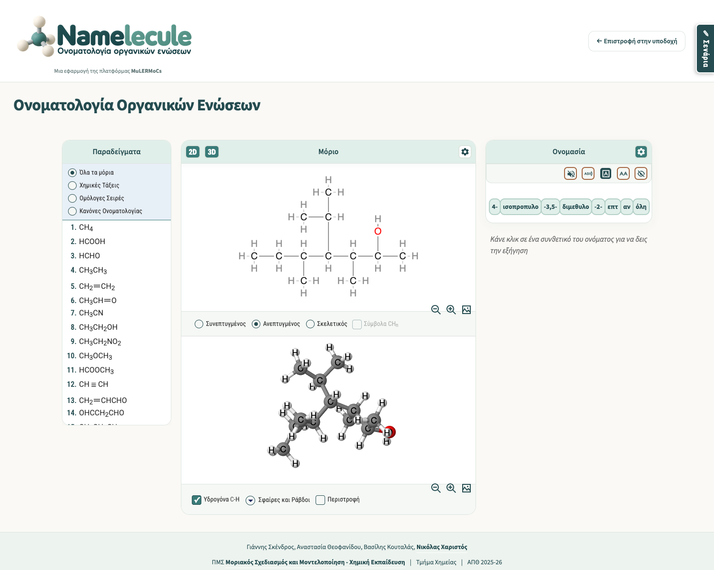

Namelecule — Ενημέρωση εργασιών
31 Οκτωβρίου 2026 · Γιάννης Σκένδρος · Κύρια έκδοση v52
Η αναφορά συγκεντρώνει τις αλλαγές από την προηγούμενη ενημέρωση της 30ής Οκτωβρίου. Η εργασία εστίασε στην αναγνωσιμότητα των 2D τύπων, στη συγκεκριμένη αστοχία κύκλου ζωής του JSmol και στην ομοιογένεια των ανεπτυγμένων μοριακών αρχείων.
Η βιβλιοθήκη διατηρεί 141 μόρια, 14 ενεργά μαθήματα και 337 βήματα. Δεν προστέθηκαν νέες ενώσεις ή κανόνες ονοματολογίας. Η δημόσια React παραμένει στην προηγούμενη κατάστασή της, χωρίς νέο build ή συγχρονισμό. Για συμβατότητα, οι τέσσερις host σελίδες της χρησιμοποιούν πλέον αντίγραφα data52/viewer52 από την προηγούμενη δημόσια αναθεώρηση 39ccedff. Δεν άλλαξαν React components ή core. Άλλες κοινές εξαρτήσεις και το CDN διατηρούνται· δεν πρόκειται για πλήρη απομόνωση ή offline διανομή.
1. Διόρθωση γραμμάτων και κενών στους 2D τύπους
Η διερεύνηση ξεκίνησε από γραμμή C–H που άγγιζε το επάνω μέρος του C στο προπένιο. Η αστοχία αναπαράχθηκε ήδη στην εγγενή εξαγωγή SVG του σχεδιαστή: οι υπολογισμοί ύψους των γραμμάτων υποεκτιμούσαν την πραγματική ζωγραφισμένη επιφάνεια. Συνεπώς το λευκό φόντο δεν κάλυπτε πάντοτε όλο το γράμμα.
Ενσωματώθηκε ελεγμένη τοπική διανομή JSME και κοινός μηχανισμός μέτρησης/παρουσίασης γραμμάτων, με συνεπή τοποθέτηση κειμένου και λευκού περιθωρίου. Η διαχείριση καλύπτει αναμονή γραμματοσειρών, ασφαλή ανανέωση και απόρριψη μη αναγνώσιμων εισόδων με σαφή ένδειξη, χωρίς να μένει παλιό μόριο στην οθόνη. Δεν προστίθενται νέα χημικά σύμβολα και δεν ξανασχεδιάζεται αυθαίρετα ο μοριακός γράφος.
Οπτική τεκμηρίωση της ενσωμάτωσης 2D · Αρχική σύγκριση πριν / μετά
2. Στοχευμένη διόρθωση κύκλου ζωής JSmol
Η ελεγχόμενη αναπαραγωγή έδειξε callbacks επανασχεδίασης ή resize να εκτελούνται μετά την καταστροφή του applet. Η ενσωματωμένη τοπική διανομή ακυρώνει τις εκκρεμείς εργασίες που ανήκουν στο applet και ελέγχει τη ζωή του πριν από την εκτέλεσή τους. Οι άσχετες εργασίες της σελίδας διατηρούνται.
Στις πέντε ελεγχόμενες διαδρομές καταστροφής, με δύο επαναλήψεις, υπήρξε σφάλμα σε 10/10 περιπτώσεις πριν και σε 0/10 μετά. Αυτό τεκμηριώνει τη διόρθωση του συγκεκριμένου μηχανισμού και δεν αποτελεί καθολική πιστοποίηση του 3D.
Οπτική αναφορά JSmol · Βίντεο της ελεγχόμενης αναπαραγωγής πριν / μετά
3. Ομοιογένεια ανεπτυγμένων τύπων σε 47 μόρια
Ακολουθήθηκε η ήδη εγκεκριμένη αναλογία των αλκανίων, με βάση τα αρχικά αρχεία όπου υπήρχαν και διατήρηση των χημικών γράφων και της αντιστοίχισης προς το 3D.
| Κατηγορία | Μόρια | Αντικείμενο |
|---|---|---|
| Αλκένια | 7 | C–H, C–C και C=C |
| Αλκίνια | 8 | Μήκη δεσμών και ευθυγράμμιση τριπλών δεσμών |
| Αλκαδιένια | 8 | Διπλοί δεσμοί και κεντρικό C σωρευμένων διενίων |
| Αλκενίνια | 7 | Συνδυασμός διπλού και τριπλού δεσμού |
| Αλκοόλες | 17 | C–H, C–C, C–O και ορατός O–H |
Οι τελικές αποστάσεις σχεδίασης είναι C–H = 0,3094 και C–C = 0,6188, με την ίδια απόσταση μεταξύ ατόμων και για C=C/C≡C. Στις αλκοόλες ισχύουν επίσης C–O = 0,6188 και O–H = 0,3094. Πρόκειται για μονάδες συντεταγμένων MOL, όχι για φυσικά μήκη δεσμών σε Å. Η απεικόνιση έχει μικρές αποκλίσεις pixels λόγω στρογγυλοποίησης του σχεδιαστή.
Και οι 21 υδροξυλομάδες εμφανίζονται με χωριστό O, H και ορατό δεσμό. Σε οκτώ παλιότερα ανεπτυγμένα αρχεία προστέθηκαν συνολικά 11 ρητά H του υδροξυλίου, στο τέλος των λιστών, ώστε να διατηρηθούν οι προηγούμενοι δείκτες ατόμων και δεσμών.
Στη 4-ισοπροπυλο-3,5-διμεθυλο-2-επτανόλη, η πλήρης εξίσωση του συνδέσμου της ισοπροπυλομάδας προκαλούσε σύμπτωση δύο H. Μετά από οπτικές δοκιμές εγκρίθηκε σύνδεσμος 0,98, με τις υπόλοιπες αποστάσεις αμετάβλητες. Η επιλογή ενσωματώθηκε στα MOL και στην κύρια έκδοση.

Σύγκριση διατάξεων της μεγαλύτερης αλκοόλης
4. Έλεγχοι που πραγματοποιήθηκαν
- Στην ενσωμάτωση των γραμμάτων 2D ελέγχθηκαν 422 διαθέσιμες μορφές × 2 πλάτη = 844 περιπτώσεις, χωρίς καταγεγραμμένες επαφές/αποκοπές/σφάλματα JavaScript. Αυτή η πλήρης εκτέλεση προηγήθηκε των μεταγενέστερων αλλαγών ανά κατηγορία· κατόπιν έγιναν στοχευμένοι έλεγχοι και προστασία αμετάβλητων πηγών.
- Για τη διόρθωση 2D ελέγχθηκαν ακόμη 98 καταστάσεις χειρισμών, 92 περιπτώσεις εγγενούς παραγωγού, επιλεγμένα βήματα και των 14 μαθημάτων και 18 μελλοντικές είσοδοι. Από τις τελευταίες, 12 έγιναν δεκτές και 6 υπερβολικά πυκνές απορρίφθηκαν ελεγχόμενα. Υπήρξαν αντιπροσωπευτικές δοκιμές WKWebView· αυτό δεν ισοδυναμεί με έλεγχο της εφαρμογής Safari.
- Οι επιμέρους ομάδες ακόρεστων υδρογονανθράκων ελέγχθηκαν σε χημικούς γράφους/ονομασίες, ευθυγράμμιση, μήκη, zoom, αρίθμηση, επισημάνσεις και επανάληψη των σχετικών μαθημάτων.
- Η τελική ενότητα αλκοολών πέρασε 179 καταστάσεις χειρισμών σε πλάτη 1500/390 px, με πλήρεις χειρισμούς σε τέσσερις αντιπροσωπευτικές περιπτώσεις, οκτώ ελέγχους αρίθμησης/επιλογής OH στο 3D και τρεις εξαγωγές PNG. Τα δύο μαθήματα αλκοολών, 20 και 22 βημάτων, αναπαράχθηκαν με επιστροφή/επανάληψη/έξοδο σε 92 καταστάσεις. Έγιναν επιπλέον 11 έλεγχοι μορφών και προηγούμενων κατηγοριών με πραγματικά UI clicks.
- Έγιναν ανεξάρτητες αξιολογήσεις ανά ολοκληρωμένη ενότητα. Στο τελικό review αλκοολών δεν βρέθηκε P0/P1/P2 παραγωγής. Ένα P3 στο δοκιμαστικό στιγμιότυπο διορθώθηκε και έκλεισε με στοχευμένη επαλήθευση Developer. Οι εκτελέσεις browser αποτελούν τεκμήρια Developer, χωριστά από τους ανεξάρτητους ελέγχους κώδικα/δεδομένων.
5. Τοπική εκκίνηση και πρόσφατο μήνυμα φόρτωσης 3D
Μετά από καταγεγραμμένη επανεκκίνηση του Mac, ο τοπικός server βρέθηκε ανενεργός και εμφανίστηκε μήνυμα αδυναμίας φόρτωσης SDF στη 2,2-διμεθυλο-3-πεντανόλη. Το αρχείο ήταν ακέραιο και αμετάβλητο. Η εκκίνηση από το εικονίδιο Namelecule αποκατέστησε τον server: και τα 17 SDF των αλκοολών παραδόθηκαν σωστά και το συγκεκριμένο μοντέλο φορτώθηκε πραγματικά με 24 άτομα. Η ακριβής αποτυχημένη αίτηση της εικόνας δεν καταγράφηκε.
Μετά από επανεκκίνηση ανοίγουμε πρώτα το εικονίδιο Namelecule. Δεν έγινε αλλαγή SDF ή χημικής δομής για αυτό το συμβάν. Η επαναφορά της υπηρεσίας δεν παρουσιάζεται ως γενική διόρθωση σφαλμάτων JSmol.
6. Core, επαναφορά και ανοικτά θέματα
Δεν τροποποιήθηκε το js/mulermoc-nom-core-52.js στη σημερινή εργασία. Παραμένει ίδιο με την προηγούμενη δημόσια έκδοση. SHA256: d2138418ff630ab77e578b80ca8ba3a10cc1b877c3ab8c0e5c2735ffcd1f24a2. Τα σενάρια JSON διατηρούν το περιεχόμενο και την ακολουθία τους· οι αλλαγές εμφάνισης χρησιμοποιούνται από τον κοινό viewer.
Διατηρούνται αρχικές πηγές και σημεία επαναφοράς, με ελεγχόμενη επιλεκτική αποκατάσταση που αρνείται απροσδόκητες νεότερες αλλαγές. Η πλήρης αποθήκευση κρατά επιπλέον χωριστό checkpoint και αντίγραφα. Η React αποθηκεύεται χωρίς να αλλάζει η δημόσια δοκιμαστική έκδοσή της.
- Παλαιότερη παρατήρηση διαφορετικής κλίμακας σε διαδοχικές επανασχεδιάσεις του SVG. Δεν αναπαράχθηκε στους τελικούς ελέγχους αλκοολών, αλλά η αρχική αιτία δεν έχει αποδειχθεί και δεν δηλώνεται διορθωμένη.
- Το
j2sτου JSmol παραμένει εξωτερική εξάρτηση CDN. Δεν έχει ετοιμαστεί αυτάρκες offline πακέτο. - Δεν έχει γίνει τελική πρόβα της παρουσίασης συνεδρίου, ούτε πλήρης πιστοποίηση Safari, φυσικού κινητού, όλων των 337 βημάτων ή όλων των 141 μοντέλων 3D. Τα αποτελέσματα αφορούν τις καταγεγραμμένες δοκιμές.
Η αξιοπιστία της παρουσίασης στο συνέδριο του Απριλίου 2027 παραμένει κριτήριο εργασίας. Η πλήρης πρόβα και το offline εφεδρικό πακέτο απαιτούν ξεχωριστή προετοιμασία.
Αριθμητικά στοιχεία και πηγές ελέγχων · Έτοιμο συνοδευτικό μήνυμα · Προηγούμενη ενημέρωση